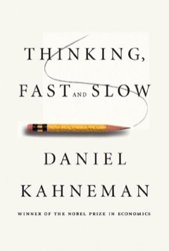
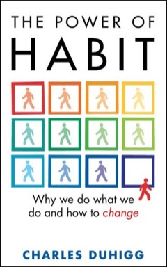
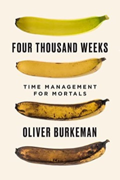

สมอง นิสัย เวลา — 3 เล่มที่ไม่ใช่หนังสือลงทุน แต่ทำให้ลงทุนดีขึ้น
ความรู้เรื่องธุรกิจหาอ่านได้จากงบการเงินและ 10-K แต่สิ่งที่ทำลายพอร์ตระยะยาวจริงๆ แทบไม่เคยเป็น "ข้อมูลไม่พอ" — มันคือสมองที่หลอกตัวเองว่าเก่ง นิสัยที่ทำงานอัตโนมัติใต้ความรู้สึกตัว และ attention ที่ถูกลากไปคนละทิศจนไม่เหลือให้สิ่งที่สำคัญจริง สามเล่มนี้ไม่มีเล่มไหนสอนเลือกหุ้น แต่ทั้งสามเล่มซ่อมเครื่องมือการลงทุนชิ้นเดียวที่เราเปลี่ยนไม่ได้: ตัวเราเอง
บทนี้เป็นบันทึกการเรียน — สรุป "ใจความสำคัญ" ของหนังสือเพื่อการศึกษา คำคม (quote) คงไว้เป็นภาษาอังกฤษตามต้นฉบับ
ทำไมหนังสือที่ช่วยการลงทุนที่สุดบางเล่ม ไม่มีคำว่า "หุ้น" สักหน้า
การลงทุนระยะยาวแบบถือหุ้นน้อยตัว โดยเนื้อแท้คือเกมของการตัดสินใจสำคัญเพียงไม่กี่สิบครั้งตลอดชีวิต ภายใต้เสียงรบกวนมหาศาล อารมณ์ที่แกว่งตามพอร์ต และช่วงเวลารอคอยยาวเป็นปีๆ ที่ไม่มีอะไรยืนยันว่าเราคิดถูก — เกมแบบนี้ตัดสินกันที่คุณภาพของ "ผู้ตัดสินใจ" มากพอๆ กับคุณภาพของการวิเคราะห์ Benjamin Graham พูดเรื่องนี้ไว้ตั้งแต่ปี 1949:
"The investor's chief problem — and even his worst enemy — is likely to be himself."
— Benjamin Graham, The Intelligent Investor
สามเล่มในบทนี้คือคู่มือซ่อม "ศัตรูตัวนั้น" คนละชั้น และมันต่อกันเป็นลูกโซ่พอดี: Kahneman วินิจฉัยว่าสมองที่เราใช้ตัดสินใจโกงเราตรงไหนบ้าง (ชั้นความคิด) — Duhigg อธิบายว่าพฤติกรรมส่วนใหญ่ของเราไม่ได้ผ่านการตัดสินใจเลยด้วยซ้ำ มันคือวงจรนิสัยที่รันอัตโนมัติ และวงจรนี้ออกแบบใหม่ได้ (ชั้นพฤติกรรม) — ส่วน Burkeman ถามคำถามที่อยู่ลึกที่สุด: ในชีวิตที่มีแค่ราวสี่พันสัปดาห์ เราจะเอา attention อันจำกัดไปวางไว้กับอะไร (ชั้นปรัชญา) อ่านจบทั้งสามเล่ม จะพบว่ามันคือเหตุผลเชิงวิทยาศาสตร์และเชิงปรัชญาของวินัยการลงทุนที่เว็บนี้พูดถึงซ้ำๆ: เขียน thesis ก่อนซื้อ กำหนด Kill Conditions จดบันทึกการตัดสินใจ และถือหุ้นน้อยตัวให้ลึก

Thinking, Fast and Slow — สมองสองระบบ และภาพลวงว่าตัวเองเก่ง
Kahneman เป็นนักจิตวิทยาที่ได้รางวัลโนเบลสาขาเศรษฐศาสตร์ — ตัวรางวัลก็บอกแก่นของเล่มแล้ว: เศรษฐศาสตร์เคยสมมติว่ามนุษย์ตัดสินใจอย่างมีเหตุผล งานวิจัยกว่า 40 ปีของเขากับ Amos Tversky พิสูจน์ว่าไม่จริงอย่างเป็นระบบ ความพลาดของมนุษย์ไม่ใช่เรื่องสุ่ม แต่มีแบบแผนซ้ำๆ ที่ทำนายได้ (และหาประโยชน์จากมันได้ — ทั้งโดยนักการตลาดและโดยตลาดหุ้น) หนังสือเล่มนี้คือการกลั่นงานทั้งชีวิตนั้นออกมาเป็นตัวละครสองตัวในหัวเรา
System 1 ทำงานเร็ว อัตโนมัติ ไม่ต้องออกแรง และปิดไม่ได้ — มันอ่านสีหน้าคน เติมคำว่า "ขนมปังกับ ___" และรู้สึก "ชอบ/ไม่ชอบ" ก่อนที่เราจะทันคิด System 2 ทำงานช้า ต้องตั้งใจ ใช้พลังงานสูง — คูณ 17×24 กรอกแบบฟอร์มภาษี ตรวจตรรกะของข้อโต้แย้ง ปัญหาคือ System 2 ขี้เกียจ: งานหลักของมันในชีวิตประจำวันไม่ใช่การคิดเอง แต่คือการ "อนุมัติ" สิ่งที่ System 1 เสนอมาโดยแทบไม่ตรวจ โจทย์คลาสสิกในเล่ม: ไม้เบสบอลกับลูกบอลราคารวม $1.10 ไม้แพงกว่าลูก $1 — ลูกบอลราคาเท่าไหร่? คำตอบที่เด้งขึ้นมาทันทีคือ 10 เซนต์ (ผิด — คำตอบจริงคือ 5 เซนต์) และนักศึกษา Harvard, MIT, Princeton กว่าครึ่งก็ตอบผิดข้อนี้ เราทุกคนคิดว่าตัวเองคือ System 2 ผู้มีเหตุผล แต่คนขับรถตัวจริงเกือบตลอดเวลาคือ System 1
What You See Is All There Is: System 1 สร้างเรื่องเล่าที่สอดคล้องที่สุดจากข้อมูล เท่าที่มีตรงหน้า โดยไม่เคยถามว่า "ข้อมูลอะไรที่ฉันยังไม่เห็น" ผลคือความมั่นใจของเราสะท้อน ความกลมกล่อมของเรื่องเล่า ไม่ใช่ปริมาณหรือคุณภาพของหลักฐาน — ยิ่งรู้น้อย เรื่องยิ่งเล่าง่าย ยิ่งมั่นใจ บนฐานนี้ Kahneman วางทางลัด (heuristics) ที่สมองใช้แทนการคิดจริง: Anchoring — ในการทดลอง วงล้อเสี่ยงโชคที่ถูกล็อกให้ออกเลข 10 หรือ 65 เปลี่ยนคำตอบของคนเรื่องสัดส่วนประเทศแอฟริกาใน UN จากเฉลี่ย 25% เป็น 45% ทั้งที่เลขนั้นไม่เกี่ยวอะไรเลย (ราคาหุ้นที่เราเคยเห็น ก็เป็นสมอแบบเดียวกัน — "เคย $200 ตอนนี้ $120 ถูกจัง") Availability — ตัดสินความน่าจะเป็นจากความง่ายในการนึกถึง: เรื่องที่เพิ่งเป็นข่าวรู้สึก "เกิดบ่อย" กว่าความจริงเสมอ และ Substitution — เจอคำถามยาก สมองแอบสลับเป็นคำถามง่ายแล้วตอบข้อนั้นแทนโดยไม่รู้ตัว ตัวอย่างในเล่มตรงกับนักลงทุนที่สุด: ผู้บริหารการเงินรายหนึ่งทุ่มเงินหลายสิบล้านดอลลาร์ซื้อหุ้น Ford หลังไปงานมอเตอร์โชว์แล้วประทับใจ — "boy, do they know how to make a car!" คำถามที่เขาต้องตอบคือ "หุ้น Ford ถูกกว่ามูลค่าไหม" แต่คำถามที่เขาตอบจริงคือ "ฉันชอบรถ Ford ไหม"
Kahneman เคยได้รับเชิญไปบรรยายให้บริษัทบริหารความมั่งคั่งแห่งหนึ่ง และได้ข้อมูลผลงานจริงของ ที่ปรึกษาการลงทุน 25 คน ย้อนหลัง 8 ปีติดต่อกัน เขาคำนวณ correlation ของอันดับผลงานข้ามปี ทั้ง 28 คู่ปี — ค่าเฉลี่ยออกมา 0.01 หรือศูนย์ในทางปฏิบัติ: คนที่ทำผลงานดีปีนี้ ไม่มีแนวโน้มจะทำได้ดีปีหน้าเลยแม้แต่น้อย
"The results resembled what you would expect from a dice-rolling contest, not a game of skill." — ที่น่าตกใจกว่าผลลัพธ์คือปฏิกิริยา: ผู้บริหารบริษัทรับฟังอย่างสงบ แล้วทุกอย่างดำเนินต่อเหมือนเดิม เพราะข้อเท็จจริงที่ท้าทายรากฐานอาชีพ (และโบนัส) ของคนทั้งอุตสาหกรรม จะไม่ถูกดูดซึม งานของ Terry Odean ที่เล่มนี้อ้างตอกซ้ำอีกชั้น: ศึกษาบัญชีนักลงทุนรายย่อยหลักหมื่นบัญชี พบว่าโดยเฉลี่ย หุ้นที่พวกเขา "ขายทิ้ง" ทำผลตอบแทนดีกว่าหุ้นที่พวกเขา "ซื้อเข้า" ราว 3.2% ต่อปี — ยิ่งซื้อขายถี่ ยิ่งจ่ายแพงให้ความมั่นใจของตัวเอง
แล้วสัญชาตญาณเชื่อได้เมื่อไหร่? Kahneman ทำงานร่วมกับ Gary Klein (นักจิตวิทยาฝั่งที่เชื่อใน expert intuition) จนได้ข้อสรุปร่วม: สัญชาตญาณผู้เชี่ยวชาญไว้ใจได้ต่อเมื่อ (1) สภาพแวดล้อมมีแบบแผนสม่ำเสมอพอให้เรียนรู้ได้ และ (2) ได้ฝึกฝนยาวนานพร้อม feedback ที่เร็วและชัด — หมากรุก นักดับเพลิง วิสัญญีแพทย์ ผ่านเกณฑ์ แต่การเลือกหุ้นระยะยาวไม่ผ่านสักข้อ: feedback ช้าเป็นปี เต็มไปด้วย noise และผลลัพธ์ถูกโชคปนหนัก ความรู้สึก "ตัวนี้ใช่แน่ๆ" ในตลาดหุ้นจึงเป็นแค่เสียงของ System 1 ไม่ใช่ความเชี่ยวชาญ
ทฤษฎีที่ทำให้ Kahneman ได้โนเบล: มนุษย์ไม่ได้ประเมิน "ระดับความมั่งคั่ง" แต่ประเมิน "การเปลี่ยนแปลง" เทียบกับจุดอ้างอิง (เช่น ต้นทุนที่ซื้อมา) และเส้นความรู้สึกสองฝั่งไม่สมมาตร — ความเจ็บจากการขาดทุน $100 รุนแรงราว 1.5–2.5 เท่าของความสุขจากกำไร $100 ผลข้างเคียงในพอร์ตคือพฤติกรรมที่นักลงทุนรายย่อยทำซ้ำทั้งโลก: รีบขายตัวที่กำไร (กลัวกำไรหาย — risk-averse ฝั่งได้) แต่ กอดตัวที่ขาดทุน (ยอมเสี่ยงต่อเพื่อหนีการ "ยอมรับว่าขาดทุน" — risk-seeking ฝั่งเสีย) ทั้งที่ต้นทุนที่ซื้อมาเป็นข้อมูลที่ตลาดไม่แคร์เลยสักนิด เล่มนี้ยังเตือนเรื่อง regression to the mean ผ่านเรื่องครูฝึกบินอิสราเอล: ผลงานที่สุดขั้ว (ดีมาก/แย่มาก) มักตามด้วยผลงานที่กลับเข้าใกล้ค่าเฉลี่ยโดยธรรมชาติ — "success = talent + luck; great success = a little more talent + a lot of luck" ผลตอบแทนกองทุนหรือเซียนหุ้นปีเดียวจึงบอกฝีมือได้น้อยกว่าที่เรารู้สึกมาก
Kahneman เล่าความพลาดของตัวเอง: ทีมออกแบบหลักสูตรที่เขาร่วมอยู่ ประเมินว่างานจะเสร็จใน ~2 ปี จนเขาถามสมาชิกที่เคยเห็นทีมแบบเดียวกันมาหลายสิบทีมว่า "ทีมอื่นใช้เวลาเท่าไหร่" — คำตอบ: 40% ไม่เสร็จเลย ที่เหลือใช้ 7–10 ปี (ทีมของเขาใช้ไป 8 ปี) นี่คือความต่างของ inside view (มองจากแผนของเราเอง — มองโลกดีเสมอ) กับ outside view (มองจากสถิติของเคสแบบเดียวกัน — base rate) ยาแก้ความมั่นใจเกินที่ Kahneman ชอบที่สุดคือ premortem ของ Gary Klein: ก่อนตัดสินใจใหญ่ ให้ทั้งทีมจินตนาการว่า "ผ่านไปหนึ่งปี แผนนี้ล้มเหลวยับเยิน — จงเขียนประวัติศาสตร์ว่ามันพังเพราะอะไร" การสมมติว่าพังไปแล้ว ปลดล็อกให้คนกล้าพูดความเสี่ยงที่ตอนกำลังเชียร์กันอยู่ไม่มีใครกล้าแตะ
คำถามที่เล่มนี้บังคับให้นักลงทุนทุกคนตอบ: ผลตอบแทนที่ผ่านมาของเรา คือฝีมือหรือโชค? — System 1 จะตอบให้เสมอว่า "ฝีมือ" เพราะมันเล่าเรื่องย้อนหลังเก่ง และตลาดหุ้นเป็นสนาม low-validity ที่ความรู้สึกมั่นใจไม่มีความหมาย ยาแก้เดียวที่เหลือคือ "จดสถิติแบบที่เถียงไม่ได้": ก่อนซื้อ เขียนลงบันทึกว่าซื้อเพราะอะไร คาดว่าอะไรจะเกิด และมั่นใจกี่เปอร์เซ็นต์ — แล้วกลับมาเกรดตัวเองว่าถูกหรือผิดทุกๆ 6–12 เดือน เพื่อวัด calibration จริง: เรื่องที่เรามั่นใจ 80% ถูกจริงกี่ครั้ง? ถ้าถูกแค่ครึ่งเดียว เราไม่ได้เก่งเท่าที่รู้สึก และขนาด position ควรสะท้อนข้อเท็จจริงนั้น ไม่ใช่ความรู้สึก ส่วน premortem คือท่าเดียวกับการเขียน Kill Conditions ก่อนกดซื้อ: สมมติว่าอีกสามปี thesis นี้ตายแล้ว — มันตายเพราะอะไร เขียนออกมาให้ได้ก่อนจ่ายเงิน

The Power of Habit — ผลตอบแทนคือผลของนิสัย ไม่ใช่ไอเดีย
ถ้า Kahneman บอกว่าการตัดสินใจของเราบิดเบี้ยว Duhigg มีข่าวที่แย่กว่านั้น: พฤติกรรมส่วนใหญ่ของเรา ไม่ได้ผ่านการตัดสินใจเลย — งานวิจัยของ Duke University ที่เล่มนี้อ้าง พบว่ากว่า 40% ของการกระทำในแต่ละวันไม่ใช่การตัดสินใจ แต่เป็นนิสัยที่รันอัตโนมัติ หลักฐานทางประสาทวิทยาที่หนังสือใช้เปิดเรื่องคือเคสของ Eugene Pauly ("E.P.") — ชายที่สมองส่วนความจำถูกไวรัสทำลายจนจำแผนผังบ้านตัวเองไม่ได้ บอกไม่ได้ว่าห้องครัวอยู่ทางไหน แต่เมื่อหิว เขาลุกเดินไปเปิดตู้กับข้าวถูกตำแหน่ง และออกไปเดินเล่นรอบบ้านแล้วกลับมาถูกทุกครั้ง — เพราะนิสัยไม่ได้อยู่ในสมองส่วนความจำ มันอยู่ใน basal ganglia ส่วนที่ลึกและดึกดำบรรพ์กว่า ทำงานได้โดยไม่ต้องพึ่งความจำหรือเหตุผลเลย
นิสัยทุกตัวมีโครงสร้างเดียวกันสามจังหวะ: cue (ตัวจุดชนวน — เวลา สถานที่ อารมณ์ คนรอบตัว หรือการกระทำก่อนหน้า) → routine (พฤติกรรมที่รันอัตโนมัติ) → reward (รางวัลที่บอกสมองว่า loop นี้ควรเก็บไว้ใช้อีก) แต่ชิ้นส่วนที่ทำให้ loop ติดแน่นจริงๆ คือ craving: การทดลองของ Wolfram Schultz กับลิงชื่อ Julio พบว่าเมื่อเรียนรู้ pattern แล้ว โดปามีนไม่ได้หลั่งตอน "ได้รางวัล" อีกต่อไป แต่หลั่งตั้งแต่ เห็น cue — สมองเสพความคาดหวังล่วงหน้า และถ้ารางวัลไม่มาตามนัด มันจะทุรนทุราย นิสัยจึงไม่ได้ขับเคลื่อนด้วยรางวัล แต่ด้วย "ความอยากที่มาก่อนรางวัล"
สองเคสการตลาดในเล่มอธิบายพลังของมัน: Pepsodent ทำให้คนอเมริกันแปรงฟันทั้งประเทศ (จากราว 7% ของครัวเรือนที่มียาสีฟัน เป็น 65% ภายในทศวรรษเดียว) ด้วย cue ที่สัมผัสได้ — เอาลิ้นแตะฟันแล้วเจอ "คราบฟิล์ม" — บวก reward ที่รู้สึกได้ทันที: ความซ่าเย็นจากมินต์ ที่คนตีความว่า "สะอาดแล้ว" ส่วน Febreze เกือบเจ๊งตอนขายเป็นน้ำยาดับกลิ่น เพราะคนที่บ้านมีกลิ่นนั้นจมูกชินจนไม่ได้กลิ่นอะไรเลย (ไม่มี cue!) — P&G รอดเพราะเปลี่ยนตำแหน่งสินค้า เป็น "ท่าปิดจ๊อบของการทำความสะอาด": ฉีดตอนห้องเพิ่งเรียบร้อยเพื่อให้กลิ่นหอมเป็นรางวัลจบงาน กลายเป็นสินค้าระดับพันล้านดอลลาร์ต่อปี — บทเรียน: อยากปลูกนิสัยอะไร ต้องออกแบบ craving ให้มันก่อน
กฎทองของการเปลี่ยนนิสัย: คง cue เดิม คง reward เดิม แล้ว เปลี่ยนเฉพาะ routine ตรงกลาง Alcoholics Anonymous ทำงานแบบนี้โดยไม่รู้ตัว — cue เดิม (ความเครียด ความอยากหนีความรู้สึก) ถูกจับคู่กับ routine ใหม่ (ไปประชุม โทรหา sponsor) ที่ให้ reward เดิม (การปลดปล่อย เพื่อน การยอมรับ) แต่ Duhigg เติมเงื่อนไขสำคัญ: การเขียนทับจะทนแรงกดดันของวิกฤตจริงได้ ต้องมี belief — ความเชื่อว่าการเปลี่ยนแปลงเป็นไปได้ ซึ่งมักเกิดในชุมชนที่มีคนเปลี่ยนสำเร็จให้เห็น โค้ช NFL Tony Dungy คือเคสเดียวกันในสนามกีฬา: เขาไม่ได้สอน playbook ใหม่ แต่ฝึกให้ผู้เล่นตอบสนอง cue เดิมด้วย routine อัตโนมัติจน "เร็วกว่าการคิด" — และทีมของเขาแพ้เกมใหญ่ครั้งแล้วครั้งเล่าตรงจุดเดียว: วินาทีกดดันที่ผู้เล่นเลิกเชื่อระบบ แล้วกลับไป "คิดเอง" กลางสนาม จนกระทั่งทีมเชื่อจริงทั้งใจ Colts จึงได้แชมป์ Super Bowl
"Champions don't do extraordinary things. They do ordinary things, but they do them without thinking, too fast for the other team to react." — Tony Dungy (อ้างในเล่ม)
นิสัยไม่ได้สำคัญเท่ากันหมด บางตัวเป็น "หินก้อนหลักของซุ้มโค้ง" — เปลี่ยนตัวเดียว ที่เหลือขยับตาม เคสที่โด่งดังที่สุดในเล่ม: ปี 1987 Paul O'Neill รับตำแหน่ง CEO ของ Alcoa แล้วใช้สุนทรพจน์แรกต่อนักลงทุน Wall Street พูดเรื่องเดียว — ความปลอดภัยของคนงาน ("ผมตั้งใจทำให้ Alcoa เป็นบริษัทที่ปลอดภัยที่สุดในอเมริกา อุบัติเหตุต้องเป็นศูนย์") นักลงทุนคนหนึ่งวิ่งออกไปโทรบอกลูกค้าให้ขายหุ้นทิ้งทันที — ภายหลังเขาเรียกมันว่า "คำแนะนำที่แย่ที่สุดในชีวิตการทำงานของผม": กำไร Alcoa ทำสถิติสูงสุดภายในปีเดียว และเมื่อ O'Neill เกษียณปี 2000 กำไรสุทธิต่อปีโตเป็น 5 เท่า มูลค่าบริษัทเพิ่มขึ้นราว $27,000 ล้าน
ทำไมมันได้ผล: การจะทำให้อุบัติเหตุเป็นศูนย์ องค์กรต้องเข้าใจว่ากระบวนการผลิตพังตรงไหน ต้องรื้อ process ที่หละหลวม ต้องเปิดสายสื่อสารให้คนหน้างานรายงานตรงถึงผู้บริหารได้ในไม่กี่ชั่วโมง — คุณภาพและประสิทธิภาพจึงถูกลากให้ดีขึ้นทั้งระบบโดยไม่ต้องสั่ง keystone habit สร้าง "ชัยชนะเล็กๆ" ที่ทบต้นเป็นวัฒนธรรม ในระดับบุคคล เล่มนี้ยกการออกกำลังกายและการจดบันทึกอาหาร (กลุ่มที่จดสิ่งที่กินทุกวัน ลดน้ำหนักได้เป็นสองเท่าของกลุ่มที่ไม่จด) — จุดร่วมคือ นิสัยพวกนี้บังคับให้ "มองเห็น" พฤติกรรมตัวเอง แล้วโครงสร้างอื่นตามมาเอง
การทดลองคลาสสิกของ Roy Baumeister: ให้คนสองกลุ่มนั่งหน้าจานคุกกี้อบใหม่กับหัวไชเท้า กลุ่มที่ถูกสั่งให้กินได้แค่หัวไชเท้า (ต้องฝืนใจตลอด) ยอมแพ้โจทย์ปริศนาที่แก้ไม่ได้ในเวลา ราว 8 นาที เทียบกับ 19 นาทีของกลุ่มที่กินคุกกี้ได้ — willpower เป็นทรัพยากรที่หมดได้เหมือนกล้ามเนื้อล้า องค์กรที่เข้าใจเรื่องนี้ที่สุดในเล่มคือ Starbucks: แทนที่จะหวังให้พนักงาน "ใจแข็ง" ตอนลูกค้าโวยวาย บริษัทให้พนักงานเขียนแผนรับมือ "จุดเจ็บ" ล่วงหน้าเป็นลายลักษณ์อักษรแล้วซ้อมจนเป็นอัตโนมัติ (ระบบ LATTE: Listen, Acknowledge, Take action, Thank, Explain) — วินัย ณ วินาทีวิกฤตไม่ได้มาจากความเข้มแข็งสดๆ ตรงนั้น แต่มาจาก routine ที่ตัดสินใจไว้แล้ว ตั้งแต่วันที่ยังใจเย็น
"Once you understand that habits can change, you have the freedom — and the responsibility — to remake them."
— Charles Duhigg
ผลตอบแทนระยะยาวคือผลของ "กระบวนการ" ไม่ใช่ไอเดียเทพครั้งเดียว — และตลาดคือเครื่องยิง cue ใส่เราทั้งวัน: พอร์ตแดง ข่าวร้าย หุ้นคนอื่นวิ่ง ถ้าเราไม่ออกแบบ routine ไว้ก่อน สมองจะหยิบ routine ที่ง่ายที่สุดให้เสมอ คือซื้อๆ ขายๆ ตามความรู้สึก วิธีใช้เล่มนี้กับพอร์ต: ออกแบบ loop เองทั้งสามจังหวะ — cue (งบออก / หุ้นร่วงแรง / อยากซื้อตัวใหม่) → routine ใหม่ (เปิด checklist กับสมุดบันทึก ไม่ใช่เปิดแอปเทรด) → reward (ความรู้สึก "ปิด loop" เมื่อได้เขียนและเกรดตัวเอง) Keystone habit ของนักลงทุนคือข้อเดียว: เขียน thesis + Kill Conditions ก่อนซื้อทุกครั้ง ไม่มีข้อยกเว้น — นิสัยตัวเดียวนี้บังคับให้เข้าใจธุรกิจจริง บังคับให้นิยามความล้มเหลวล่วงหน้า และลากวินัยอื่นตามมาทั้งระบบ เหมือน safety ของ O'Neill ที่ลาก Alcoa ทั้งบริษัท ส่วน LATTE ฉบับนักลงทุนคือ: ตัดสินใจตั้งแต่วันฟ้าใสว่าจะทำอะไรในวันที่หุ้น -30% — ถ้า thesis ไม่เสีย = ไม่ต้องทำอะไร ถ้า Kill Condition ทำงาน = ขายตามแผน เพราะวินาทีที่ตลาดพังจริง willpower จะไม่เหลือ มีแต่นิสัยที่ซ้อมไว้เท่านั้นที่ทำงาน

Four Thousand Weeks — ชีวิตสั้นเกินกว่าจะไล่ตามหุ้นทุกตัว
"The average human lifespan is absurdly, terrifyingly, insultingly short."
— Oliver Burkeman (ประโยคเปิดของหนังสือ)
อยู่ถึง 80 ปี = ประมาณ 4,000 สัปดาห์ — Burkeman เขียนคอลัมน์ productivity ให้ The Guardian อยู่หลายปี ทดลองทุกระบบจัดการเวลาที่โลกมี แล้วสรุปด้วยหนังสือที่หักหลังทั้งวงการ: ปัญหาของเราไม่ใช่บริหารเวลาไม่เก่ง แต่คือการปฏิเสธความจริงว่าเวลามีจำกัดจนน่าตกใจ ระบบ productivity ส่วนใหญ่ขายฝันว่าถ้าจัดการดีพอ เราจะ "ทำได้ทุกอย่าง" — เล่มนี้บอกตรงกันข้าม: คุณจะไม่มีวันทำได้ทุกอย่าง และชีวิตจะเริ่มดีขึ้นทันทีที่ยอมรับข้อนี้จริงๆ
สัญชาตญาณบอกว่าถ้าทำงานเร็วขึ้น เดี๋ยวจะ "ว่างพอ" ไปทำสิ่งที่สำคัญ — Burkeman ชี้ว่านี่คือกับดัก: ความเร็วไม่เคยสร้างที่ว่าง มันยกระดับ input เข้ามาแทน ตอบอีเมลเร็วขึ้น = คนส่งอีเมลหาเรามากขึ้น เครื่องซักผ้าและเครื่องมือประหยัดเวลาร้อยปีที่ผ่านมา ไม่เคยทำให้มนุษย์รู้สึกมีเวลาเหลือขึ้นเลย กลยุทธ์ "เคลียร์เรื่องเล็กให้หมดก่อน แล้วค่อยลงมือเรื่องใหญ่" จึงแพ้ตั้งแต่ออกแบบ เพราะเรื่องเล็กไม่มีวันหมด — inbox ที่ว่างคือสัญญาณให้โลกส่งเพิ่ม สิ่งสำคัญไม่เคยได้เวลาจาก "ที่เหลือ" มันต้องถูกจ่ายก่อน (pay yourself first)
คำว่า decide มาจากรากละติน decidere — "ตัดออก" (รากเดียวกับ homicide): ทุกการเลือกคือการฆ่าทางเลือกอื่นนับพัน และนั่นไม่ใช่ข้อบกพร่องของการเลือก มันคือสิ่งที่ทำให้การเลือกมีความหมาย — commitment กับสิ่งเดียว (คน อาชีพ เมือง) ไม่ใช่กรงขังของเสรีภาพ แต่เป็นแหล่งเดียวของความหมายที่ของทดลองชิมไปเรื่อยๆ ให้ไม่ได้ FOMO จึงตั้งคำถามผิดตั้งแต่ต้น: การพลาด "เกือบทุกอย่าง" ถูกการันตีไว้แล้วโดยคณิตศาสตร์ของ 4,000 สัปดาห์ — คำถามเดียวที่เหลือคือจะเลือกพลาดอะไร (Burkeman เรียกมุมกลับนี้ว่า joy of missing out)
ภาคปฏิบัติของเล่มสรุปเป็นสามข้อ: (1) pay yourself first — ทำสิ่งสำคัญที่สุดก่อน อย่ารอ "เคลียร์เสร็จ" (2) จำกัดงานที่เปิดค้าง ไว้ราวๆ 3 อย่าง — เสร็จก่อนค่อยเปิดใหม่ (3) ต้านทาน middling priorities — อันตรายที่สุดไม่ใช่สิ่งไร้สาระ แต่คือสิ่งที่ "ดีพอประมาณ" Burkeman ยกเรื่องเล่า (ที่เขาหมายเหตุเองว่าอาจแต่งขึ้น แต่แก่นถูกต้อง) ของ Warren Buffett กับนักบินส่วนตัว: เขียนเป้าหมาย 25 ข้อ วงกลม 5 ข้อแรก — แล้วอีก 20 ข้อที่เหลือไม่ใช่ "ไว้ทำทีหลัง" แต่คือ avoid-at-all-costs list เพราะมันน่าดึงดูดพอจะขโมยเวลา แต่ไม่สำคัญพอจะคุ้มค่าชีวิตที่จ่ายไป
"Your experience of being alive consists of nothing other than the sum of everything to which you pay attention." — เวลาไม่ใช่ทรัพยากรที่เรา "ใช้" แล้วเหลือชีวิตไว้ต่างหาก ชีวิตคือผลรวมของสิ่งที่เราใส่ใจ การเสีย attention ให้เรื่องไร้ค่า จึงไม่ใช่เสียเวลา แต่เสียชีวิตชิ้นนั้นไปเลย — และ attention economy ทั้งอุตสาหกรรม ถูกออกแบบมาปล้นตรงนี้โดยเฉพาะ ด้วยความโกรธและความแปลกใหม่ที่ System 1 ต้านไม่เป็น อีกครึ่งหนึ่งของสมการคือความอดทน: Burkeman เล่า Helsinki Bus Station Theory ของช่างภาพ Arno Minkkinen — รถเมล์ทุกสายออกจากสถานีวิ่งเส้นทางเดียวกันในช่วงแรก เหมือนงานช่วงต้นของทุกคนที่ดูเหมือนลอกคนอื่น ทางเดียวที่จะไปถึงช่วงที่เส้นทางแยกเป็นของเราเอง คือ "อยู่บนรถต่อไป" — ความอดทนไม่ใช่การรอเฉยๆ แต่เป็นความสามารถเชิงรุก ที่หายากขึ้นทุกปีในโลกที่ทุกอย่างเร็ว และดังนั้นยิ่งมีมูลค่า
นี่คือปรัชญาเบื้องหลังพอร์ตแบบ concentrated ทั้งใบ: เรามี ~4,000 สัปดาห์ การถือหุ้นหนึ่งตัวแบบตั้งใจศึกษาจริง 10 ปี = 520 สัปดาห์ — ราว 13% ของชีวิตทั้งชีวิต การตัดสินใจสเกลนี้มีโควตาไม่กี่ครั้ง (Buffett เคยเปรียบว่าเหมือนตั๋วเจาะรูได้ 20 ช่องตลอดชีวิต) และ attention ของนักลงทุนรายย่อยคือทุนที่ขาดแคลนกว่าเงินเสมอ: การไล่ตาม 40 ticker ทุก earnings ทุกข่าว macro คือ efficiency trap ฉบับตลาดหุ้น — ยิ่งดูมาก ยิ่งรู้สึกต้องดูมากขึ้น และคุณภาพการตัดสินใจต่อครั้งยิ่งจาง หุ้นอันดับ 6–25 ในลิสต์ของเราคือ middling priorities ตัวจริง: น่าสนใจพอจะขโมยเวลาศึกษา แต่ไม่ดีพอจะเข้าพอร์ต — มันควรอยู่ใน avoid list ไม่ใช่ watchlist และเมื่อหุ้นที่เราไม่ได้ถือวิ่งแรง (ซึ่งจะเกิดทุกปี การันตี) นั่นไม่ใช่ความผิดพลาด มันคือราคาของการเลือก — missing out is guaranteed; สิ่งเดียวที่เลือกได้คือพลาดอย่างตั้งใจ สุดท้าย การถือ 10 ปีให้รอด ต้องใช้ท่าเดียวกับ Helsinki bus: อยู่บนรถต่อไปผ่านช่วงที่พอร์ตดูไม่ไปไหน — ตราบใดที่ธุรกิจยังทำงานและ Kill Conditions ยังไม่ทำงาน
อ่านสามเล่มนี้ให้เป็นระบบเดียวกัน
สามเล่มนี้ตอบคนละคำถาม แต่ประกอบเป็นระบบเดียว: Burkeman ให้ ทำไม (ทำไมต้องเลือกน้อยและลึก — เพราะชีวิตจ่ายเป็นสัปดาห์) Kahneman ให้ ระวังอะไร (สมองจะโกงเราตรงไหนระหว่างทาง) และ Duhigg ให้ ทำอย่างไร (แปลงความตั้งใจให้เป็นระบบอัตโนมัติที่ไม่ต้องพึ่ง willpower) ลำดับอ่านที่แนะนำ:
ลำดับการอ่านที่แนะนำ
จุดร่วมสุดท้ายที่สามเล่มเห็นตรงกันโดยไม่ได้นัดหมาย: ความได้เปรียบที่ยั่งยืนที่สุด ไม่ได้มาจากการรู้อะไรที่คนอื่นไม่รู้ แต่มาจากการทำสิ่งที่ทุกคนรู้อยู่แล้ว — อย่างสม่ำเสมอ เป็นระบบ และนานพอ ซึ่งฟังดูง่าย จนกระทั่งตลาดร่วงจริง ชีวิตยุ่งจริง และสมองเริ่มเล่าเรื่องเข้าข้างตัวเองจริง — วันนั้นแหละที่หนังสือสามเล่มนี้จ่ายผลตอบแทน